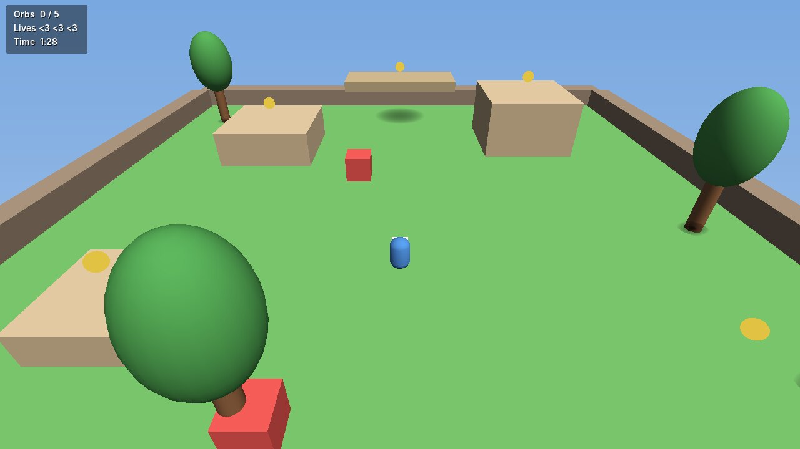

Groscript
The whole language fits on one screen
Blocks end with end. Calls always use parentheses. Fields start with @. Errors point at the line and column. If you have written a little Ruby, Python or Lua, you can read this already.
# scripts/orb.gro
class Orb < Entity
SPIN = 90
function ready()
@base_y = self.position.y
@phase = Math.random() * 6.28
end
function update(delta)
@phase += delta * 2
self.position = self.position.with_y(@base_y + Math.sin(@phase) * 0.15)
self.rotate(Vector3.new(0, SPIN * delta, 0))
end
function on_collision(other)
if other.tag == "player"
Audio.play("assets/audio/pickup.wav")
Scene.find("GameManager").collect_orb()
destroy()
end
end
end- 1
Scripts are classes
class Orb < Entityattaches to an object in your scene. The engine callsready,updateandon_collisionwhen they matter. - 2
@fieldsremember thingsInstance variables live on the object. Other scripts can read them too:
orb.phase. - 3
Parentheses mean "do something"
self.positionis data;destroy()is an action. One rule, no guessing. - 4
Errors you can act on
Every error names the file, line and column, draws a caret under the mistake and shows the call stack. A broken script is disabled; the editor keeps running.
All 24 keywords
functionclassmoduleimportifelsifelsewhileforinrepeattimesreturnbreaknextendtruefalsenilselfsuperandornot
The one-day course
From print to a playable game, 9 to 5
Eight short lessons. Every example on the docs site is a real file that our test suite runs, so the output you see is the output you get.
Values and variables
Numbers, strings, nil, interpolation, and why only false and nil are falsey.
Decisions and loops
if/elsif, while, for, and the friendly repeat 3 times.
Functions
Parameters, defaults, return, predicate names like alive?.
Arrays and hashes
Inventories, lookup tables and symbols like :idle.
Classes
initialize, @fields, inheritance and super.
Modules and errors
Split code across files with import; read an error report.
Your first game script
Lifecycle callbacks, Input, Time and moving an entity.
Make the game
Collisions, pickups, a score, a win screen and a packaged build.
The engine
Everything a jam game needs, nothing it doesn't
Grodot is built for one person making a small 3D game. Each piece is simple enough to read in an afternoon.
A real editor
Viewport with orbit camera and move gizmo, hierarchy with drag-to-parent, inspector for every component, asset browser, console, undo and redo.
Play without fear
Play runs a copy of your scene. Stop throws the copy away, so testing never changes what you built.
Software renderer
A multithreaded rasterizer with depth, lighting, fog and soft shadows. No GPU drivers to fight, and it renders in CI.
Physics that behaves
Boxes and spheres, dynamic and kinematic bodies, sensors, raycasts and on_floor?(). Collisions arrive as on_collision(other).
Sound and HUD
Audio.play for effects and music over ALSA, PipeWire or PulseAudio. UI.text and UI.message for scores and win screens.
Ship a .tar.gz
grodot package bundles the runtime and your game into one archive with a run.sh. Players unpack and run.
The workflow
From an empty folder to a packaged game
The editor is where you build. The grodot command creates projects, checks them for mistakes, runs them without the editor and packages them for players.
$ grodot new orb-garden Created project 'orb garden' in orb-garden $ grodot open orb-garden # build, press F5 to play $ grodot check orb-garden Checking 'Orb Garden' scenes/main.gscene: 29 entities 6 script(s), 2 scene/prefab file(s) OK: no problems found. $ grodot run orb-garden --headless --frames 600 Ran 600 frames headless without errors. $ grodot package orb-garden Packaged builds/orb-garden-0.1.0-linux-x86_64.tar.gz
Under the hood
Pure Rust, zero dependencies
Grodot uses only the Rust standard library. X11 and ALSA are loaded when the program starts, so cargo build needs no system packages and the same binary runs headless on a server.
Groscript never sees renderer or physics types. Scripts talk to the engine through a small set of documented bindings.

Sample game
Orb Garden
Collect five orbs before the clock runs out. Jump between platforms, dodge sliding hazards and press R to try again. It uses every part of the engine and ships in examples/orb-garden.
grodot run examples/orb-garden